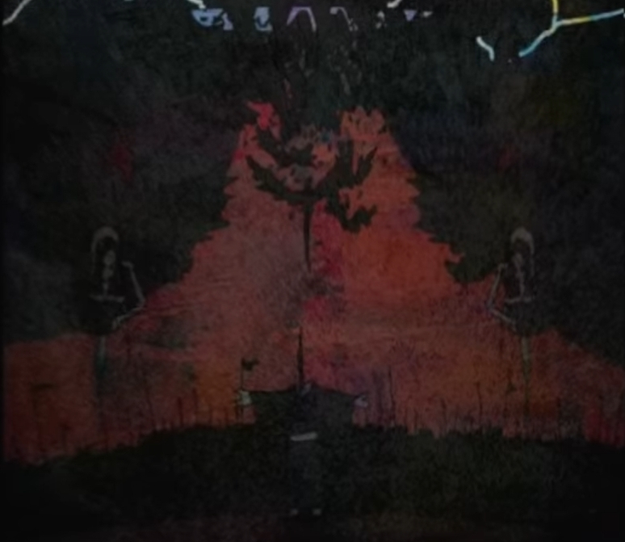
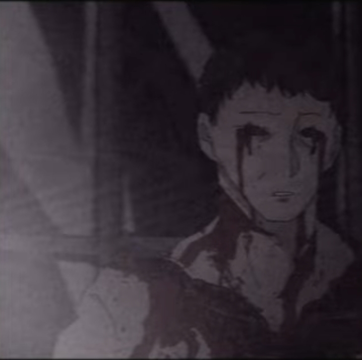
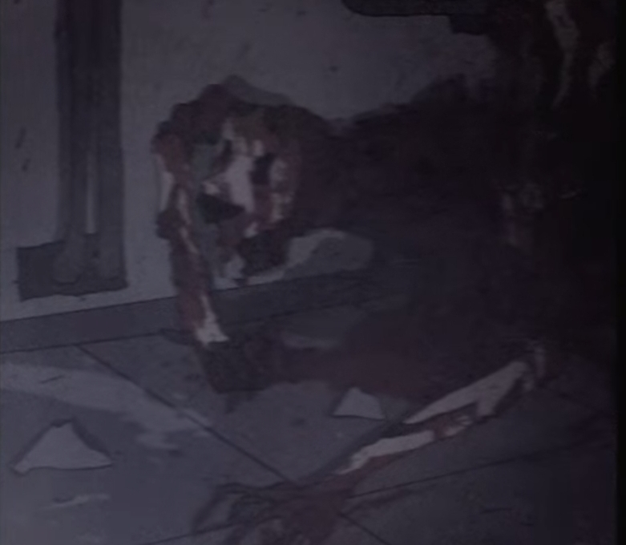
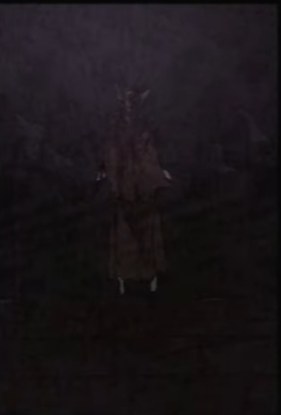
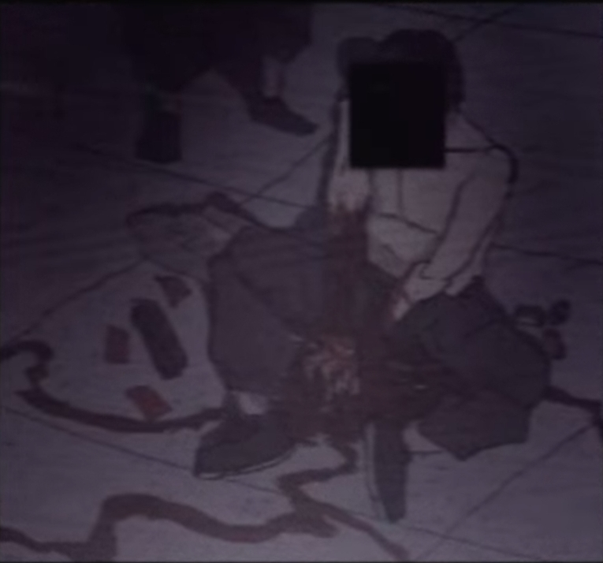
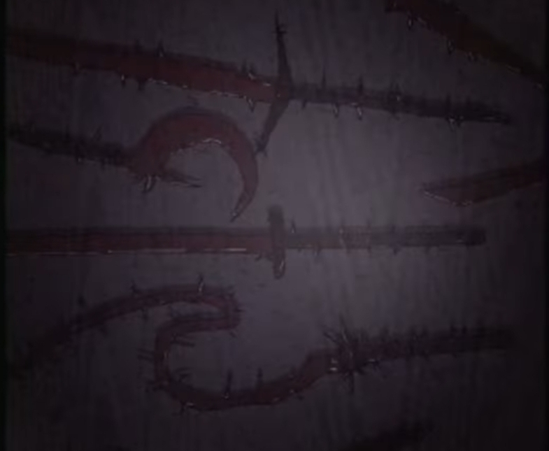
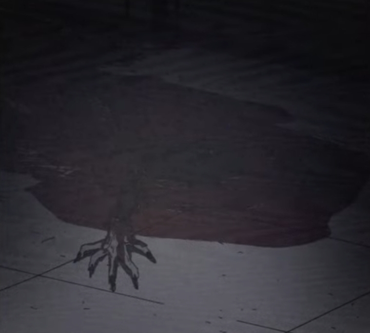
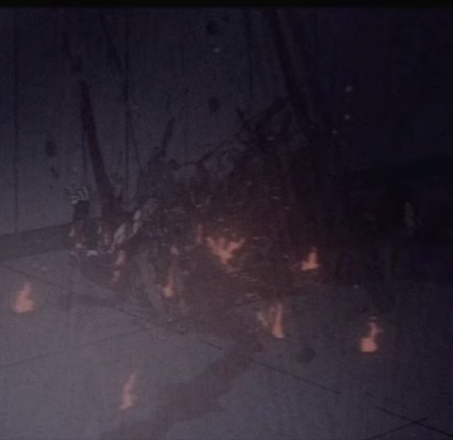

Cults_871104
| ARCHIVE CODE | Cults_871104 |
| INTERNAL INDEX | PC-FHC-004 |
| ACCESS LEVEL | RESTRICTED / LOCAL STATIC EXPORT |
| CLASSIFICATION | RESEARCH / CLASSIFIED |
| ORIGIN TITLE | F.H.C 극비 보안 문서 |
| ATTACHMENTS | 11 |
AUDIO LOG // b66bdd7601c7.mp3
F.H.C 극비 보안 문서
F.H.C Classified Security Document
경고
본 정보에 포함된 내용은 F.H.C 극비 분석 부서에서 독점 관리 중인 기밀 자료입니다
해당 정보에는 다수의 기밀 내용과 오컬트 위협 사례가 포함되어 있으므로, 반드시 관련 담당자를 동반하여 열람해주시기 바랍니다
무단 열람, 복제, 전송, 외부 공유는 금지되며 관련 문의는 해당 부서 책임자 또는 U.A.C 지정 연락관에게 문의하시기 바랍니다
타락교
Corrupted Cult
타락교라 불리는 종교는 15세기 이전, 마녀사냥과 미신, 공포, 오컬트 사상이 지배하던 암흑의 시대에 탄생한 것으로 추정된다
이들은 저주의 힘을 신성한 은총으로 여기며, 인간의 육체와 정신을 변질시키는 힘을 축복이라 부른다
종교를 창설한 지도자에 대해서는 현재까지 밝혀진 바가 없다
다만 이들은 공통적으로 우시노다, 즉 Ushinoda라 불리는 존재를 신으로 숭배한다
타락교 신자들은 우시노다가 내려주는 타락의 힘을 시련이자 축복으로 받아들이며, 육체의 변형과 정신의 붕괴마저 신앙의 일부로 간주한다
현재 타락교는 여러 국가에 걸쳐 확산된 상태이며, 각국의 치안 조직, 오컬트 대응 부서, 정보기관에 의해 심각한 사회 위협으로 분류되고 있다

타락교 의 특징
- 우시노다라는 존재를 신으로 숭배한다
- 타락의 힘을 저주가 아닌 축복으로 받아들인다
- 육체의 불멸과 신체 변형을 신앙의 증거로 여긴다
- 살인, 인육 섭취, 의식 행위를 통해 변형을 억제하거나 강화한다
- 괴이화된 인간과 동물을 신성한 존재로 취급한다
- 현대 사회 내부에 비밀 조직 형태로 침투해 있다
신원불명의 신자
Unidentified Believer
신원불명의 신자는 타락교 내부에서도 가장 일반적으로 발견되는 신자 유형이다
이들은 타락의 힘을 받아들인 뒤 신체 변형을 겪으며, 그 과정에서 인간으로서의 원래 형태를 점차 잃어간다
그러나 이들은 타락의 형태를 완전히 받아들이는 것이 아니라, 오히려 본래의 인간 형태를 되찾기 위해 타인을 살해하고 신선한 살을 섭취한다
신선한 육체를 섭취할수록 외형은 일시적으로 인간에 가까워지며, 동시에 불멸성에 가까운 회복 능력을 얻는 것으로 보고되어 있다
[관련 이미지 자료:IMAGE2212]

행동 양상
- 단독 또는 소규모 집단으로 활동한다
- 일반인처럼 위장할 수 있다
- 신체 곳곳에 타락의 흔적이 남아 있다
- 변형이 심화될수록 이성적 판단 능력이 저하된다
- 살해 후 신선한 살을 섭취하는 습성이 있다
- 섭취 행위를 통해 일시적으로 원래 모습을 회복한다
가면을 쓴 존재
Masked Entity
가면을 쓴 존재는 타락교의 보호를 받는 특수한 괴이 개체이다
해당 존재는 본래 야생의 짐승이었으나, 우시노다의 타락의 힘에 의해 변형된 것으로 추정된다
타락교는 이 개체를 단순한 괴물이 아닌 종교의 상징이자 신성한 동물로 숭배한다
일부 지역에서는 이 존재가 타락교 의식의 중심에 배치되며, 신자들이 이를 보호하기 위해 목숨을 바치는 사례도 확인되었다
[관련 이미지 자료:IMAGE0321]

특징
- 야생 동물 기반의 변형 개체로 추정된다
- 가면 또는 가면과 유사한 외골격을 지닌다
- 타락교 내부에서 신성한 동물로 취급된다
- 의식장 중심부에서 발견되는 경우가 많다
- 일반 신자보다 높은 공격성과 생존력을 보인다
- 일부 개체는 신자들에게 명령을 내리는 듯한 행동을 보인다
타락의 과정 및 형태
Corruption Process
타락의 힘을 받아들인 생명체는 점진적인 신체 변형을 겪는다
초기에는 피부 변색, 체온 변화, 감각 이상, 골격 통증 등의 증상이 보고된다
이후 뼈가 뒤틀리거나 비정상적으로 자라나며, 피부가 찢어지고 근육 구조가 변형된다
변형이 심화될 경우 감각 기관의 상실, 자아 붕괴, 기억 손상, 극단적 폭력성 증가가 발생한다
타락교 신자들은 이러한 변형을 억제하거나 원래 모습을 되찾기 위해 타인을 살해하고 그 살을 섭취한다
그러나 이는 완전한 회복이 아니라 일시적인 외형 안정화에 불과한 것으로 추정된다
[관련 이미지 자료:IMAGE2212]
전부 너 잘못이야
관찰된 변형 증상
- 골격 뒤틀림
- 뼈의 비정상적 성장
- 피부 파열
- 근육 구조 변형
- 감각 기관 손실
- 자아 붕괴
- 기억 손상
- 폭력성 증가
- 인간 형태의 일시적 회복
- 불완전한 불멸성 획득
혈교
Blood Cult
혈교는 타락교와는 다른 방식의 의식 체계를 사용하는 종교이다
이들은 태초부터 비밀리에 존재해온 것으로 추정되며, 우시노다의 타락의 힘에 의해 변형된 동물을 숭배하지 않는다
혈교가 따르는 것은 피의 길, 즉 Path of Blood이다
이들은 피를 단순한 생명 유지 물질이 아닌, 문을 열고, 형태를 만들고, 힘을 전달하는 매개체로 숭배한다
피를 이용한 의식, 대량의 피를 통해 열리는 길, 피로 만들어진 무기와 이동 경로가 이들의 핵심 신앙 요소이다
혈교 또한 타락교와 마찬가지로 타인에게 극단적인 피해를 입히는 위험 집단으로 분류된다

혈교 의 특징
- 피의 길을 숭배한다
- 피를 의식의 핵심 매개체로 사용한다
- 타락교와 달리 신체의 타락을 직접 유발하지 않는다
- 피를 이용해 무기, 경로, 덫, 저장소를 만든다
- 법 집행기관 및 오컬트 부서 일부에서도 유사한 혈액 기술을 응용한다
- 대량 출혈, 희생 의식, 혈액 저장 의식과 관련되어 있다
혈액 이동 경로 조정
Blood Route Control
혈액을 이용한 능력은 혈액의 이동 경로를 조정할 수 있는 것으로 확인되었다
사용자는 신체 부위 어디에서든 출혈이 발생했을 때, 혈액의 이동 경로를 바꾸어 치명적인 출혈을 방지할 수 있다
또한 외부로 방출된 혈액을 일정한 형태로 응고시키거나 움직이게 만들어, 무기 또는 방어 수단으로 활용할 수 있다
[관련 이미지 자료:IMAGE2381]

전술적 활용
- 출혈로 인한 사망 방지
- 혈액 흐름 제어
- 혈액 응고를 이용한 방어막 생성
- 혈액을 칼날, 창, 사슬 형태로 변형
- 부상자의 생존 시간 연장
- 적의 혈액 흐름 방해 가능성
혈무의 제작 과정
Blood Weapon Creation
혈무는 혈액을 근접 무기에 덮은 뒤, 피의 의식을 통해 강화한 무기를 뜻한다
의식이 완료된 혈무는 기존 무기보다 높은 공격력과 내구성을 지니며, 날붙이의 경우 더욱 예리한 형태로 변형된다
이러한 혈무는 특히 타락의 힘을 받아들인 생명체에게 효과적인 것으로 확인되었다
[관련 이미지 자료:IMAGE1289]

혈무의 특징
- 근접 무기에 혈액을 덮어 제작한다
- 피의 의식이 필요하다
- 무기의 내구성이 증가한다
- 날붙이의 절삭력이 강화된다
- 타락체에게 높은 피해를 입힌다
- 화염과 병행할 경우 효과가 더욱 증가한다
피의 호수를 거니는
Walking Through the Lake of Blood
혈액 웅덩이는 혈교 신자들에게 단순한 흔적이 아니라, 저장소이자 이동 경로로 사용된다
이들은 혈액 웅덩이를 통해 짧은 거리를 이동하거나, 웅덩이 내부에 물건을 숨기고, 원거리 공격 또는 덫의 형태로 활용할 수 있다
현장 대응 인원은 혈액 웅덩이를 단순한 오염 물질로 판단해서는 안 된다
해당 웅덩이는 언제든 공격 수단으로 변형될 수 있다
[관련 이미지 자료:IMAGE8900]

대응 지침
- 혈액 웅덩이에 접근하지 말 것
- 웅덩이 내부에 물체나 생명체가 숨겨져 있을 가능성을 고려할 것
- 혈액용기를 사용해 회수 및 격리할 것
- 불 또는 고열 장비를 활용해 웅덩이 확산을 차단할 것
- 웅덩이 주변에서 단독 행동을 금지할 것
혈액 저장소
Blood Reservoir
혈액을 사용하는 방식은 사용자에게 심각한 출혈과 체력 소모를 유발한다
따라서 혈교 신자들은 외부 혈액 저장소를 운용하거나, 전투 중 확보한 혈액을 마시는 방식으로 손실된 혈액을 보충한다
또한 출혈이 발생한 상처 부위를 혈액 저장소에 직접 접촉시켜, 혈액을 체내로 공급받는 사례도 확인되었다
[관련 이미지 자료:IMAGE5211]
특징
- 혈액 사용자들의 보급 수단이다
- 대량의 혈액이 저장되어 있다
- 전투 중 회복 수단으로 사용된다
- 혈교 의식의 중심 물체로 쓰이기도 한다
- 오염 가능성이 높아 일반 접촉은 금지된다
- 회수 시 밀폐형 혈액용기 사용이 권장된다
제압된 타락체
Suppressed Corrupted Entity
혈무를 이용한 제압 방식은 타락의 힘을 받아들인 생명체에게 효과적인 것으로 확인되었다
특히 혈무와 화염을 함께 사용한 공격은 타락체의 재생 능력과 신체 변형을 억제하는 데 탁월한 효과를 보였다
이는 혈액 의식이 타락의 힘과 상반되는 성질을 지니고 있거나, 타락체의 변형 조직에 직접적인 반응을 일으키기 때문으로 추정된다
[관련 이미지 자료:IMAGE3281]

제압 방식
- 혈무를 이용한 근접 절단
- 화염을 이용한 조직 소각
- 혈액 경로 봉쇄
- 타락 조직의 재생 차단
- 부적 또는 봉인구와 병행 사용
- 신체 중심부 및 변형 부위 우선 타격
혈무는 타락체 제압에 효과적이나, 제작 및 운용에는 높은 위험이 따른다.
허가받지 않은 인원의 혈무 제작은 금지된다.
타락교와 혈교 비교
- 영문명 : Corrupted Cult : Blood Cult
- 숭배 대상 : 우시노다 / 타락의 힘 : 피의 길 / Path of Blood
- 핵심 의식 : 타락, 변형, 인육 섭취 : 피의 의식, 혈액 조작
- 신체 영향 : 변형, 괴이화, 자아 붕괴 : 직접적 타락은 없음
- 주요 위협 : 괴이화, 불멸성, 폭력성 : 혈액 무기화, 이동, 덫
- 상징 : 가면을 쓴 짐승 : 피, 호수, 혈무
- 대응 방식 : 봉인, 화염, 혈무 : 혈액 격리, 고열, 혈액용기
현장 대응 경고
경고 1
타락교 신자는 인간의 외형을 유지하고 있어도 안전하지 않다
신체 일부에 타락의 흔적이 남아있다면 즉시 격리해야 한다
경고 2
혈교가 남긴 혈액 웅덩이는 단순한 혈흔이 아니다
이동 경로, 저장소, 덫, 원거리 공격 수단으로 사용될 수 있다
주의
혈무는 타락체 제압에 효과적이나, 제작 및 운용에는 높은 위험이 따른다
허가받지 않은 인원의 혈무 제작은 금지된다